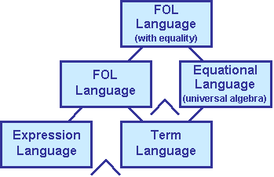

This page briefly describes the IFF First Order Logic (meta) Ontology
(IFF-FOL),
which resides in the lower metalevel of the IFF. As such, it
falls within the scope of the Categorical
Design Principle, an
important goal in the design of the IFF lower metalevel. To achieve
this goal, several changes to the IFF are described as core
considerations. The interior or kernel
aspect of the IFF-FOL, which is one pole of the
FOL distinction, is fully represented by categorical logic.
Grammars
are being develop for the external surface syntax of the IFF-FOL.
This document discusses and axiomatizes the IFF First Order Logic
(meta) Ontology (IFF-FOL). The language aspect of the IFF-FOL
architecture is layered in a modular fashion (Figure 1). The central
bifurcation is between terms and expressions. The context of FOL
languages is the fibered product of the context of
expression languages and the context of term languages over the context
of sets and bijections (variables), whereas the context of FOL
languages with equality is the fibered product of the context of
FOL languages and the context of universal algebra over the context
of term languages. Loosely, to get FOL languages with equality,
pullback relations along functions and then along equations. Within the
modules of
Figure 1, are six important submodules: term/tuple fixpoint,
expression/arity fixpoint, Lawvere construction, term-tuple coproducts,
term monad and expression monad. The terms attached to these submodules
are
color-coded according to Table 1.
|
 |
||||||||||||||||||
| Table 1: Term Color-Coding | Figure 1: The IFF-FOL Language Architecture |
There is an IFF-FOL Term Language Namespace (IFF-TRM). At the base, a term language contains only functions symbols and variables. Terms and term tuples are inductively generated and have an abstract syntax. The Lawvere construction is defined here. Equations can be added giving an equational language. Equational languages or equational presentations are an extension of term languages. They define a quotient of their Lawvere category.
There is an IFF-FOL Expression Language Namespace (IFF-EXPR). At the base, an expression language contains only relation symbols and variables. Expressions (formulas) are inductively generated using connectives and quantifiers, and have an abstract syntax. Peircian existential graphs can be included here.
There is an IFF FOL Language Namespace (IFF-FOL). Expression and term languages can be composed into FOL languages. At the base, these contain function symbols, relation symbols and variables. An FOL language is a term language and an expression language that share a common set of variables. In other words, FOL languages are the product of expression languages and term languages fibered at variables.
The Simple Common Logic (SCL) Standard provides an abstract syntax that can be realized in various concrete syntaxes. Each syntax consists of a grammar that specifies the sets of terms and formulas built upon the basic linguistic elements of variables, functions and relation symbols. Languages will be identified with the formulas generated by a given grammar from a given lexicon. SCL provides the structural constraints that must be met by any language so generated to be considered conformant. Table 2 compares the terminology used for specifying the abstract syntax of the SCL standard and the IFF-FOL.
Table 2: Comparisons between SCL and IFF-FOL
|
|
SCL |
IFF-FOL |
|---|---|---|
| basic |
GenVar |
variable |
| FnSym |
function |
|
| IndCon |
constant |
|
| Id |
equation |
|
| PredCon |
relation |
|
| arity |
valence |
|
| terms |
App |
application |
| PrimTrm |
constant
+ variable |
|
| Trm |
term |
|
| formulas |
Holds |
holds |
| AtFla |
atomic-expression |
|
| Neg |
negation |
|
| Conj |
conjunction |
|
| Disj |
disjunction |
|
| Cond |
implication |
|
| BiCond |
equivalence |
|
| ExQuant |
existential-quantification |
|
| UnivQuant |
universal-quantification |
|
| Fla |
expression |